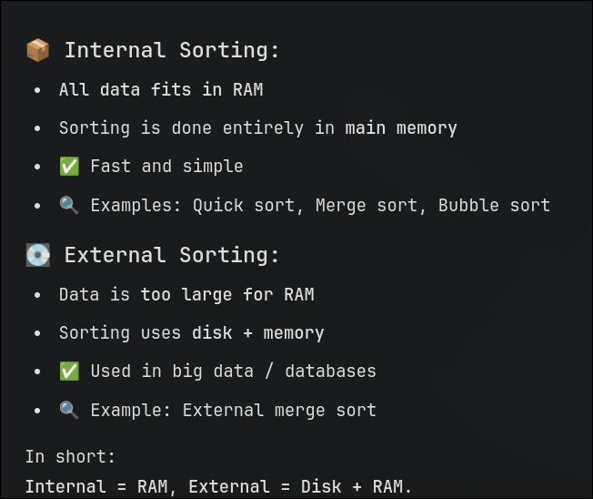

Sorting Techniques
All the sorting technique effeciencies lie between O(n log n) to O(n2)
Bubble Sort
Bubbble sort is the most popular sorting algorithm because it is very simple to understand and implement.
The algorithm achieves its name from the fact that :
With every iteration the largest element moves like a bubble to the top of the array.
The bubble sort method is not efficient for larger arrays.
#include<stdio.h>
void printArray(int arr[], int*n){
for(int i=0;i<*n;i++){
printf("Element at %d : %d \n",i+1,arr[i]);
}
}
void bubSort(int arr[],int *n){
int temp;
for(int i=0;i<*n;i++){
for(int j=0;j<*n-i;j++){
if(arr[j]>arr[j+1]){
temp=arr[j];
arr[j]=arr[j+1];
arr[j+1]=temp;
}
}
}
}
void main(){
int n;
printf("Enter the size of the array: \n");
scanf("%d",&n);
int arr[n];
for(int i=0;i<n;i++){
printf("Enter array elements: \n");
scanf("%d",&arr[i]);
}
printf("Before sorting: \n");
printArray(arr,&n);
bubSort(arr,&n);
printf("after sorting: \n");
printArray(arr,&n);
}
The Time complexity of bubble sort algorithm is n times summation of n i.e nothign but
O(n2)
Selection Sort
- As the name suggest this algorithm selects the smaller element in the first iteration traversing the array
- Places it in the first position
- Selection sort heavily realies on the comparision method for its functionality while bubble sort relied
on finding middle elements
- Doesn't work optimally on large arrays
#include<stdio.h>
int min(int arr[],int k ,int n){
int loc=k,min=arr[k];
for(int i=k+1;i<n;i++){
if(arr[i]<min){
min=arr[i];
loc=i;
}
}
return loc;
}
void printArray(int arr[],int n){
for(int i=0;i<n;i++){
printf("Element at %d: %d\n",i+1,arr[i]);
}
}
void main(){
int n;
printf("Enter the size of the array: \n");
scanf("%d",&n);
int arr[n];
for(int i=0;i<n;i++){
printf("Enter element no %d: \n",i+1);
scanf("%d",&arr[i]);
}
printf("Before sorting: \n");
printArray(arr,n);
int temp,loc;
for(int i=0;i<n;i++){
loc=min(arr,i,n);
temp=arr[i];
arr[i]=arr[loc];
arr[loc]=temp;
}
printf("After Sorting: \n");
printArray(arr,n);
}
The Time complexity of selection sort algorithm is n times summation of n i.e nothign but
O(n2)
Insertion Sort
- Again doesn't work on very big arrays
- As the name suggest it picks one element on every iteration and inserts it in the a position that is going to be
its final position after sorting of the element
- At every iteration the element is compared with all the elements before it
- If any element is greater than the current element , that element is placed in the current location and the
element before it is compared
- Lastly when the arrays is exhausted in the reverse manner or if an element is found that is equal to or smaller
than the current element we place our current element in the position after it
- More complex than selection or bubble sort
#include<stdio.h>
void insertionSort(int arr[],int n){
printf("\t\t********** Implementing Insertion sort******** \n\n ")
int k,j;
for(int i=1;i<n;i++){
k=arr[i];
for(j=i-1;j>=0 && arr[j]>k ; j--){
arr[j+1]=arr[j];
}
arr[j+1]=k;
}
}
void printArray(int arr[],int n){
for(int i=0;i<n;i++){
printf("The element at %d : %d \n",i+1,arr[i]);
}
}
void main(){
int n;
printf("Enter the size of the array: \n");
scanf("%d",&n);
int arr[n];
for(int i=0;i<n;i++){
printf("Enter the element at %d: ",i+1);
scanf("%d",&arr[i]);
}
printf("\n\nBefore sorting: \n");
printArray(arr,n);
insertionSort(arr,n);
printf("\n\n After sorting: \n");
printArray(arr,n);
}
The Time complexity of insertion sort algorithm is n times summation of n i.e nothign but
O(n2)
Bonus

Chap6